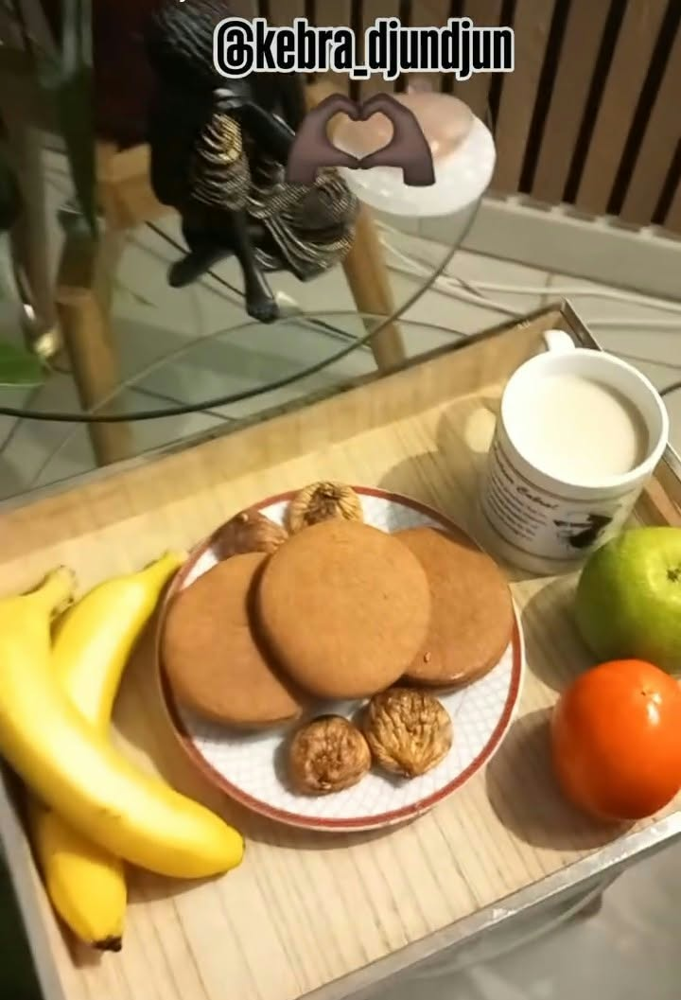
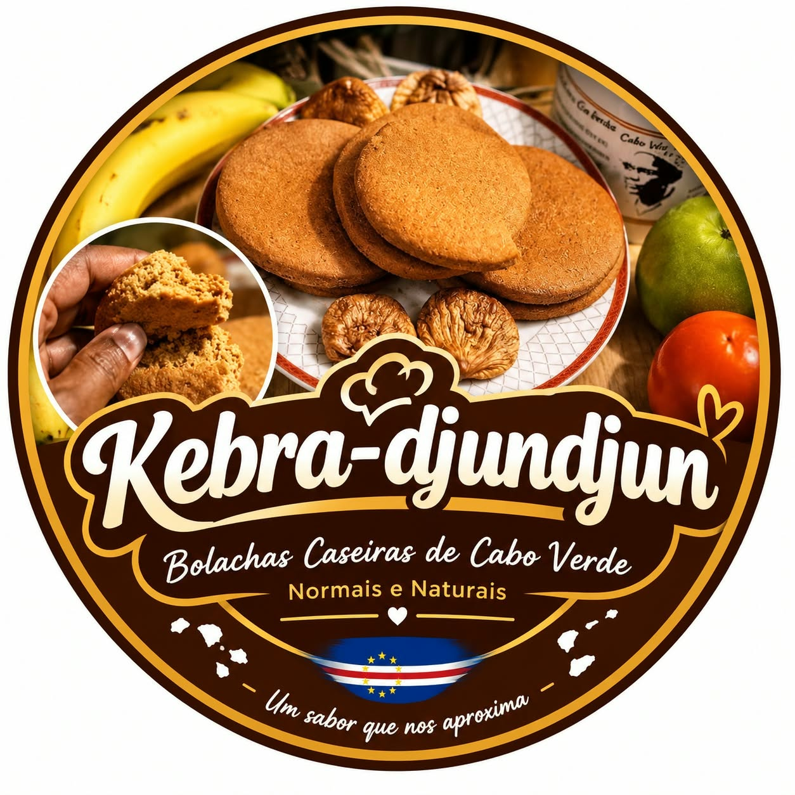

Bolachas Artesanais de Cabo Verde
Uma experiência gastronómica rústica e refinada. Receita familiar guardada com carinho, confecionada à mão e entregue em toda a Suíça.
Escolhemos rigorosamente os ingredientes mais nobres para recriar o sabor autêntico e inconfundível do arquipélago.
Mãos experientes moldam cada bolacha seguindo a tradição ancestral transmitida de geração em geração.
Cozedura lenta e cuidadosa para garantir a textura crocante e o aroma inconfundível que reconforta a alma.
As bolachas Kebra-Djundjun harmonizam perfeitamente com o seu café matinal espresso, um chá aromático quente ou como um acompanhamento digestivo refinado no final do dia.
Preço de referência: 12 CHF por saco artesanal

Assista em direto aos bastidores da confecção tradicional e acompanhe o nosso trabalho artesanal.
Assistir no TikTok @kebradjundjun8 ↗